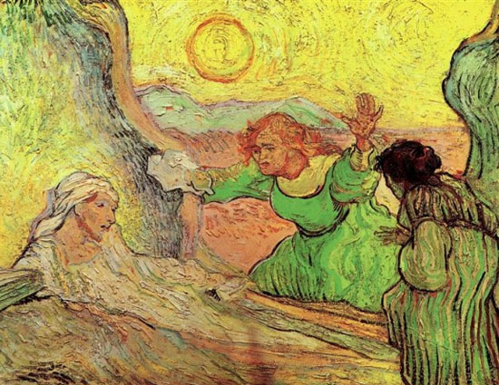

Η ανάσταση
Ένα θεματικό εργαστήριο πυροδότησης της θεατρικής γραφής
από τον συγγραφέα Θανάση Τριαρίδη
Αθήνα, Μάϊος - Σεπτέμβριος 2019
Το 5ο Εργαστήριο Πυροδότησης Θεατρικής Γραφής, με θεματικό άξονα Η ανάσταση και υπό την αιγίδα των Εκδόσεων Ευρασία, ξεκίνησε στις 15 Μαϊου 2019 και ολοκληρώθηκε στις 18 Σεπτεμβρίου 2019.
Την αρχική προκήρυξη μπορείτε να τη δείτε εδώ.
Διαβάστε την εισαγωγή του συγγραφέα Θανάση Τριαρίδη
Και οι 15 συμμετέχοντες ολοκλήρωσαν το έργο τους εντός του Εργαστηρίου – και είναι οι εξής: η Δέσποινα Αποστολίδου, ο Δημήτρης Ασνάης, η Μαρία Αυγέρη, η Βανέσσα Βαΐτση, η Κατερίνα Καζολέα, ο Δομήνικος Κοντολέων, ο Μάνος Κουνουγάκης, η Κατερίνα Λουκίδου, ο Βαγγέλης Παπαδιόχος, η Άννα-Μαρία Πισκοπάνη, η Κατερίνα Σταθοπούλου, η Αντιγόνη Σταυροπούλου, η Ανθή Τσιρούκη, ο Γιάννης Φαρσάρης και ο Δημήτρης Φούτσιας. Από τη δουλειά τους προέκυψαν τα ακόλουθα 15 θεατρικά έργα:
- Δέσποινα Αποστολίδου, Μετάνοια
- Δημήτρης Ασνάης, Δελφινάκι
- Μαρία Αυγέρη, Uncanny
- Βανέσσα Βαΐτση, Ηλιοστάσιο
- Κατερίνα Καζολέα, Ο εξολκέας
- Δομήνικος Κοντολέων, Cave Canem
- Μάνος Κουνουγάκης, Άνθη, λίγα άνθη για τους πεθαμένους
- Κατερίνα Λουκίδου, Η καρδιά της κατσαρίδας
- Βαγγέλης Παπαδιόχος, All summer long
- Άννα-Μαρία Πισκοπάνη, Χτυπητό Αυγό
- Κατερίνα Σταθοπούλου, Harmony ή η εξέγερση των κεφαλιών
- Αντιγόνη Σταυροπούλου, Κοράκια
- Ανθή Τσιρούκη, Prompt
- Γιάννης Φαρσάρης, Ευτυχισμένο κοιμάμενο νερό
- Δημήτρης Φούτσιας, Η κόρη του θεραπευτή